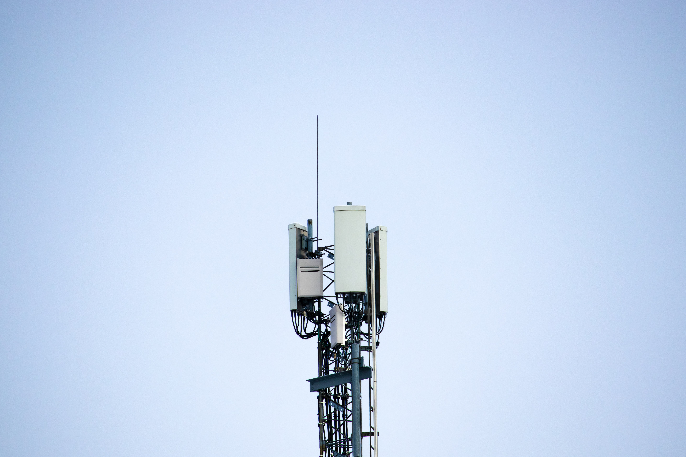

O que?
Antenas microfitas são as antenas com tamanhos relativamente pequenas, que podem ser utilizados em dispositivos modernos como celuláres, drones e entre outros.
Como?
Para modelar a antena utiliza-se os métodos aproximados com as ferramentas como MICROSTRIP PATCH ANTENNA CALCULATOR e MICROSTRIP LINE ANTENNA CALCULATOR do EM TALK para dimensionar os comprimentos e as larguras, assim como as impendâncias e as frequências de ressonâncias.
Antes da fabricação das antenas utiliza-se o software comercial como por exemplo, ANSOFT HFSS para fazer a simulação e verificação do funcionamento da antena.
Construir e medir a antena no laboratório utilizando as antenas de cornetas e análise vetorial de redes.
Resultados
Clique aqui para ver os detalhes do primeiro projeto.
Clique aqui para ver os detalhes do segundo projeto.
Clique aqui para ver os detalhes do terceiro projeto.